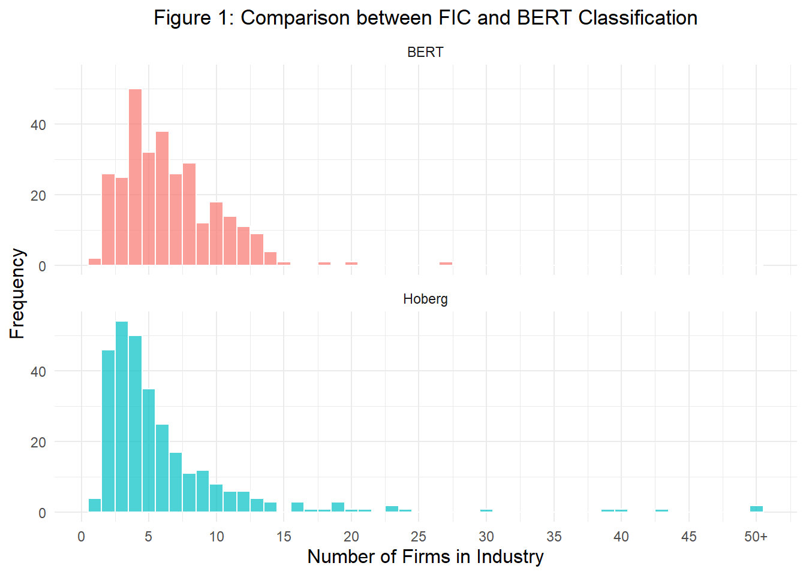

Introduction
Business model innovation (BMI) is a key activity to maintain competitiveness and even gain a competitive advantage [@pucihar_drivers_2019; @teece_business_2018]. It is therefore no surprise that the interest in BMI and methods of measuring it has grown rapidly over the last twenty years. Researchers have recently called for a BMI measurement instrument that is more comprehensive and advanced than already existing ones [@huang_review_2023]. The scale developed by Spieth & Schneider [-@spieth_business_2016] provides managers and practitioners with a measurement index for business model innovativeness. This measurement model only validates applicability of BMI theory [@huang_review_2023] and is insufficient for longitudinal studies [@clauss_measuring_2017]. Hence, this measure is not adequate for a time series analysis of BMI. Furthermore, it refers only to BMI as new-to-the-firm and is not able to grasp BMI in the sense of new-to-the-industry and new-to-market. Clauss [-@clauss_measuring_2017] developed a similar measure with comparable limitations.
This gap is addressed by proposing a novel approach to measuring BMI. US-based companies are obliged by the United States Security and Exchange Commission (SEC) to submit annual 10-K filings, wherein a detailed description of the company’s business operations is required. Hoberg & Phillips [-@hoberg_text-based_2016] use this filings to create word vectors about the companies products in order to cluster them into industries and thereby proposing a new industry classification. This study builds on their work and methods. We summarize these descriptions with Gemini, utilize the BERTScore as a similarity measure to calculate the similarities between companies and cluster them into industries. We compare our BERTScore clustering with the text-based network industry classification (TNIC) by Hoberg & Phillips [-@hoberg_text-based_2016]. Furthermore, we calculate the BERTScore between the summaries of different years for a single company. This approach enables the measurement of changes in the business model (BM) over time as the distance between the BM summary of one year to another. There is evidence that an increase in BMI is associated with improved firm performance [@cucculelli_business_2015;@latifi_business_2021;@white_exploring_2022]. In order to test the validity of our measure, we regress financial numbers on our measure, hoping to find a positive relationship.
- Key findings (and Contribution, already down below)
Our contribution is made in two ways. Firstly, we build on the concept of alternative industry classification put forth by Hoberg & Phillips [-@hoberg_text-based_2016] and propose an industry classification system based on a firm’s BM. Thirdly, we propose a novel measure for BMI that is sufficient for longitudinal studies.
The SEC mandates that the majority of public companies based in the United States submit specific documents in certain intervals. One such document is the annual 10-K filing. These filings follow a set order of topics and contain a range of information, including details about managerial discussions, risk factors for the company, legal proceedings and financial data. In the first section under the subtitle “Business,” a company presents its general business, encompassing information about its products and services. In some instances additional topics may be addressed, such as labor issues or competition [@sec_investor_2024]. In conclusion, this section contains the most useful information for describing a company’s BM [@lee_business_2014]. Furthermore, 10-K filings are a reliable source of information, given that US law prohibits false or misleading statements in the filings. The SEC monitors the compliance of the companies with the requirements and comments where disclosure appears to be inconsistent [@sec_investor_2024].
- paragraph 5 (robustness checks)
In spite of the growing interest in BMI and the increasing number of theoretical and empirical studies in this field, the research of BMI is still in a preliminary state [@huang_review_2023]. Consequently, there is considerable variation in the definitions of BMI, with some definitions being more similar to one another than others [@foss_fifteen_2017]. Spieth & Schneider [-@spieth_business_2016] identify three core dimensions a company’s BM is comprised of: its value proposition, its value creation architecture and its revenue model logic. Based on this, BMI can be conceptualized as a change that is new-to-the-firm in at least one of these dimensions. Furthermore, Spieth and Schneider [-@spieth_business_2016] introduce a measurement model to evaluate these three dimensions of BMI. They develop an index by first specifying the contents, followed by a specification of the indicators and assessing their content validity, assessing the indicators collinearity and finally assessing the external validity. A total of twelve indicators for measuring the innovativeness of the BM were identified through a comprehensive literature review and through engagement with industry practitioners. The external validity of the formative indicators was successfully validated through a survey of 200 experts in strategy and innovation management [@spieth_business_2016]. Clauss [-@clauss_measuring_2017] employs a very similar approach. After specifying the domain and dimensionality of BMI trough literature research, the author divides his scale into three hierarchical levels consisting of 41 reflective items, 10 subconstructs and three main dimensions, which are similar to the ones mentioned earlier. The scale was validated through two samples from the manufacturing industry and further demonstrated nomological validity [@clauss_measuring_2017]. However, both measures are subject to three significant limitations. Firstly, both measures lack a temporal component. Consequently, they are inadequate for use in longitudinal studies or ex-post evaluations of BMI. Secondly, BMI is only measured at the new-to-the-firm level rather than at the new-to-the-industry or new-to-the-market level. Thirdly, both measures rely on interviews and questionnaires, which makes conducting large-scale studies time-consuming and reliant on the willingness of the companies to cooperate [@clauss_measuring_2017;@spieth_business_2016].
The process of text mining 10-K filings is not a novel concept. Hoberg & Phillips [-@hoberg_text-based_2016] present a novel approach to defining industry boundaries. This is achieved through the parsing of the product descriptions provided by firm 10-K filings and creating word vectors. Specifically, the authors identify and exclude proper nouns, which include common words and geographic locations.They then create word vectors for each firm and year, which enables the measurement of product similarity over time. In this way the authors demonstrate shortcomings in the traditional industry classification systems such as the Standard Industry Classification (SIC) and the North American Industry Classification System (NAICS), which are not able to account for temporal changes. The new method is capable of capturing changes in industry boundaries and competitor sets over time, thereby providing a dynamic industry classification system. In their study, Lee & Hong [-@lee_business_2014] examine the evolution of a firm’s BM over time. The authors represent each document as a vector of keywords, which is similar to the approach utilized by Hoberg & Phillips [-@hoberg_text-based_2016]. After identifying the Item 1 part of the 10-K filings as the most crucial part for describing a firm’s BM, Lee & Hong [-@lee_business_2014] filter these for relevant sentences. Subsequently, the authors construct keyword vectors, which represent the concept of the BM. Therefore, the evolution of the BM is depicted as the change in the distribution of keywords over time. Nevertheless, this approach is not without shortcomings. The authors advocate for a more robust methodology, such as incorporating multi-word phrases in the keyword vectors, to enhance the reliability of the approach [@lee_business_2014].
The rest of the paper proceeds as follows. Section 2 describes the preprocessing with Gemini, our data and our methodology. Section 3 compares the industry classification based on product descriptions by Hoberg & Phillips [-@hoberg_text-based_2016] with our classification based on the BM. Section 4 lays out the BERT-model and our estimations. Section 5 discusses our results, and Section 6 concludes our study.
Data and Methodology
Preprocessing with Gemini
10-K filings are typically very large text documents, and Item 1 of these filings is no exception. Table 1 shows the deskriptive measures of the length of the original Item 1 section in our final sample. The length of a document was measured by the word count without punctuation. The document length ranges from a couple hundred words to tens of thousands. In order to utilise the entirety of the information regarding the BM in the Item 1 section and pass the text to our BERT model, we decided to let Google’s GenAI chatbot Gemini summarize them to a maximum length of 512 tokens. The summaries were created between 26 June 2024 and 6 August 2024. The model employed was Gemini Flash 1.5. The prompt was inserted at the beginning of each text file and it was passed via an API to Gemini 1. We used following prompt: “Summarize the business model from the following text. Answer with a continuous text and with five hundred twelve tokens at max. Set your focus on sources of revenue, the intended customer base, products, distribution channels and details of financing. Use only information from the following the text”.2 “intended customer base” and “product” refer to the value offering, “distribution channels” refers to the value architecture, and “sources of revenue” and “details of financing” refer to the revenue model. Consequently, this prompt covers all aspects of the definition of BMI proposed by Spieth & Schneider [-@spieth_business_2016]. The term ‘tokens’ was used deliberately in preference to ‘words’, given that the number of tokens and the number of words in a text may vary depending on the tokeniser. This way, we wanted to ensure that the whole summary is used by the BERT model. To assess the quality and accuracy of the summaries produced by Gemini, a random sample of 100 filings was selected for comparison with the original text. More precise,the original file was initially read with a focus on the points mentioned in the prompt. Subsequently, the summary was evaluated to ascertain whether it contained these same points. A list of the sample with the summaries is provided in the Appendix.
- result of this check
| Table 1: Descriptive Statistics Original Filings | |||||||
| Year | Mean | Standard Deviation | Minimum | 25th Percentile | Median | 75th Percentile | Maximum |
|---|---|---|---|---|---|---|---|
| 2016 | 7842 | 6104 | 155 | 3705 | 6026 | 10271 | 51227 |
| 2017 | 7542 | 6320 | 155 | 3522 | 5767 | 9700 | 70611 |
| 2018 | 7604 | 6272 | 180 | 3528 | 5771 | 9669 | 71700 |
| 2019 | 8009 | 6631 | 189 | 3669 | 5971 | 10410 | 78270 |
| 2020 | 8660 | 7195 | 171 | 3943 | 6449 | 10971 | 57980 |
| 2021 | 10324 | 8406 | 235 | 4670 | 7568 | 13563 | 78799 |
| 2022 | 9471 | 7997 | 171 | 4309 | 7042 | 11897 | 73937 |
| 2023 | 6646 | 4771 | 190 | 3660 | 5814 | 8401 | 43523 |
The Dataset
We collect 10-Ks filings from the digital SEC Database, using the category “10-K” as extraction condition. Since the focus of our study lies on company’s BM, we merely use the Item 1 part, since this is the most crucial part of the 10-K filings for describing the companies BM [@lee_business_2014]. Our observations are limited to an intersection of such companies, which on the one hand has been made available to the SEC since 2001 in a publicly accessible list of 10,284 companies (Appendix), of which 7,590 are currently listed on NASDAQ, NYSE or over-the-counter. We extracted 10-K filings that were submitted between 2017 and 2023 based on underlying Central Index Keys (CIK). According to […] financial firms are not further considered. Corresponding to Table 2, multiple steps of pre-processing were required to obtain a final amount 21,683 observations of seven years.
We exclude companies from the financial sector, namely companies with a SIC Code starting with six.
| Table 2: 10-K Sample Creation | ||
| Remaining Number of Observations | Observations Removed | |
|---|---|---|
| 1. Original (exchanged listed) companies, whose 10-K filings are extracted from SEC | 35731 | - |
| 2. Removing observations from financial companies whose SIC-code start with '6' | 35731 | 8162 |
| 3. Verify for Item 1 text availability (removed oberservations that are attributable to API quality) | 27569 | 3587 |
| 4. Extracting dates for which the filings are reporting for and removing of duplicated filings | 23982 | 11 |
| 5. Delete observations with incorrect date assignment | 23971 | 1810 |
| 6. Merged Gemini processed Item 1 text to the underlying data set. We did not consider texts that were not processable | 22161 | 464 |
| 7. Extract financials statements from SEC and merge them. Also remove observations for years prior to 2016 | 21697 | 11 |
| 8. Final amount of oberservations | 21686 | 0 |
| Note: Filings that were submitted between 2017 and 2023 are extracted. The survey took place in summer of 2024. Hence, later submitted filings are not considered. | ||
Financial key figures, including net income, total assets and others were originally extracted from the SEC, but also challenged with financial values from DataStream. A total of 4,225 companies are included in the sample, although the availability of filings could not always be guaranteed for all years. This is due on the one hand to the quality of the API to the SEC and on the other hand to companies that did not file 10-K reports or were listed on the stock exchange for the entire period under review. Finally, we have access to the financial key figures of the companies for the respective year, the Item I text pre-processed with the help of Gemini, company-specific identification features and the conventional SIC industry classification.
TODO
- Descriptive Table3 for length of summary (in words and tokens (use tokenizer our Model uses))
- Description of Table3 and the final Dataset
Methodology
We calculate bidirectional BERT scores of item 1 texts processed with Gemini in several variants. For replication purposes, we calculate BERTscores between different companies in the same years, on the basis of which we determine industry classifications using a hierarchical agglomerative algorithm. We further calculate BERTscores between same firms over the years, capturing a new measure for BMI.
BERT-based industry classification
Index declaration for BMI
Regarding our Replication H1: We expect a similar distribution of firms. H2: We expect a high overlap with Hobergs classification.
Regarding Contribution H2: Our measure for BMI shows a positive relationship with firm performance
Replication
Our study builds on the idea of Hoberg & Phillips [-@hoberg_text-based_2016] to utilize text data from 10-K filings to classify companies based on their similarity to each other into dynamic industries. Our approach differs in two ways: Firstly, instead of word-to-vec like the TNIC uses we employ BERT to represent text. Consequently, we use the BERTScore instead of the cosine similarity as our similarity measure. Secondly, we focus on the description of the BM rather than the product descriptions. In order to set a benchmark for our industry classification, we cluster companies into industries with the approach by Hoberg & Phillips [-@hoberg_text-based_2016]. Following this, we compare our industry classification to this benchmark.
The data for the industry classification with the BERTScore is the same as described in Section 2. For the benchmark data, we use the similarity scores provided by Hoberg-Phillips Data Library.3 The clustering described in the original study by Hoberg & Phillips [-@hoberg_text-based_2016] is a hierarchical agglomerative clustering algorithm. -> explain in further detail as well as our replication/comparison; we use 300 industries; cal
Results: similar picture as Hoberg & Phillips,overall left skewed distribution, most industries with less than 10 firms, but BERT classification with no industry over 36/37 firms. Our classification has more smaller industries

- Transition
Empirical Framework
The definition of business models includes according to Spieth & Schneider [-@spieth_business_2016] the three components value proposition, value creation and its revenue model logic. We used the pre-processing of Item I texts with Gemini to control these texts using a specific prompt in that the focus of the texts is on the definition of these three components. Hence, our BERT-based similarity scores between processed texts represent an index for BMI that can be used for empirical studies. A preliminary validity check of these similarity scores should be performed.
BERT and BERTScore
BERT (Bidirectional Encoder Representation from Transformers) is a pre-trained and transformer-based model for natural language processing (NPL) based on artificial neural networks. BERT works according to the so-called transformer architecture, which was first mentioned by Vaswani et. al (2017) [….]. According to these authors, this architecture consists of two main components, the encoder and the decoder. The encoder consists of several identical layers, which initially use the so-called self-attention mechanism to generate context-dependent representations of each word in the sentence. This mechanism can be parallelized and therefore enables different aspects of the context to be captured in the same way. The decoder, on the other hand, works in a similar way and is responsible for processing the information from the encoder and forming it into an output sequence. However, this is not relevant for BERT, as no sequence-to-sequence transformation is carried out in BERT. In contrast to Hoberg & Philips (2016) [-@hoberg_text-based_2016] word-to-vec approach, BERT works bidirectional and takes into account the context from both sides of each word simultaneously. Therefore, BERT is able to capture deeper semantics in texts such as 10-K reports. The BERTscore now computes the cosinus similarity between word or text meanings, that have been determined by representations (or embeddings) learned from BERT. The scale is from -1 to 1, where 1 describes a perfect similarity.
Estimation Strategy
Results and Discussion
Conclusion
Acknowledgement
- Jonathan for IT Support
- Prof. Kranz for Repo
Appendix
Footnotes
We forked and used following Github Repository: https://github.com/skranz/gemini_ex.↩︎
The spelling error in the last sentence of the prompt was found after processing Item 1. After evaluating the Summaries, this error did not cause any issues.↩︎
For the database see: https://hobergphillips.tuck.dartmouth.edu.↩︎